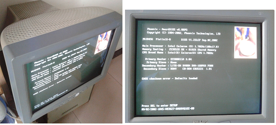

有个小孩没明白计算机 与“计算”之间的关系，觉得叫“电脑”才最合适，梦想有个无所不知的小伙伴陪伴左右。
老师教的计算过程，他运用自如，在纸上，在脑中。
这样的计算甚是无聊，幸好有好玩的东西：抓蚂蚁，下象棋，打扑克，听音乐，集卡片，撕日历…… 有一次，爸说有个小孩能算出任意日期是星期几，他既羡慕也猜疑。
他从同学和电视节目里得知电脑有好多好玩的游戏（红色警戒，暗黑破坏神，福尔摩斯探案等），电脑似乎成了无所不包的游戏机。他从报纸读到一款游戏《疯人院》(Sanitarium)，被其悬疑的故事设定深深吸引。借着报纸中描述的若干场景，他脑补了整个故事。他期盼能有台电脑，看看这个游戏的真相。
没有电脑，幸好有好玩的书籍，引导他一次一次踏进奇妙的领域，思考求知，追寻真相。他对不可思议之事件尤为痴迷。X-File的背景音乐迷离诡异，《福尔摩斯探案》丢了一集。
一个个奇闻被证假，罗兹威尔事件，尼斯湖水怪，百慕大三角，大西洲，神农架野人，黑竹沟浓雾，诺查丹玛斯预言… 继鬼神之后，外星人成了一种新迷信。“没有十全十美的谎言，如同没有彻头彻尾的绝望”，在妄想的谜雾中走出来，真实的美好在仍前方。
第一台电脑是个箱子般的大脑袋，一点也不讨喜。如果有人每天扛肩上走在路上，绝对标新立异，将来不进计算机系，也肯定能进体育系。笨重的箱子里是一个模拟世界，可以如同在现实般按计算器，下象棋，玩游戏，听音乐，看电影，翻日历，看书籍。由于显示器的刷新率只有85HZ，盯久了眼睛容易累。

较之游戏，他更喜欢音乐，电影和书籍。《人工智能》讲述了一个机器小孩追寻母爱的童话式故事，借此引伸出“人”的定义。

彩色世界的背后是简单极致的实现模型：数据 + 运算。这两个基本元素，如易经之一黑一白，一阴一阳，一静一动，从量变到质变，演绎万事万物。数据由二进制字节序列表示，运算由若干类指令（算术/逻辑 运算指令，位移指令，跳转指令，数据移动指令等）组成。较之名称“电脑”，“计算机”更能揭示其本质，淋漓尽致地体现人类的高度智慧（有人猜测，人类通过逆向外星人工程，掌握了超大规模集成电路技术，并实现计算机。囧，切忌外星人迷信，妄想快远离）。原始的命令式编程方式，对理解计算机本质极其重要，但要真用于程序的构建，对于绝大多数人都过于枯燥艰辛，甚至望而却步，因为不够直观，不能直接面向真实世界中的各个对象进行设计。面向过程编程语言进一步把程序表示为：变量 + 函数。面向对象编程语言则真正把对象的概念用于构建程序，把事物（状态 + 行为）表示为对象（属性 + 方法）。
后来因为硬件技术的革新，液晶显示器又大又薄又轻，CPU运算速度，内存和硬盘大小都在呈几何级数增长，软件也变得丰富无比。 这个模拟世界获得了前所未有的质感，漂亮的时钟日历，绚丽的报纸杂志，逼真的游戏，甚至可以无比流畅地模拟另一个操作系统。
面向对象编程语言已是业界主流，笑谈编程必称类，悄问女儿美不美。
他最爱的游戏之一《死亡空间》（Dead Space），场面动魄惊心，故事曲折迷离，仿佛身临其境，更甚于小说，电影。
各种办公设备轻易互联一体，以轻薄的笔记本为主机，配备无线键盘，鼠标，更大的显示器。


便捷的Surface，勾起他儿时的梦想，仿佛看到小伙伴的身影，小脑袋，有大世界。感人的高清分辨率，即使用上一整天也不会累。计算机不再是冰冷的工具，生活切实多了一种乐趣，一种享受，一种温情。
Lisp作为最伟大而悠久的高级编程语言之一，被广泛应用于人工智能领域，简洁优雅，连贯统一，处处体现生命力。Python同样的简洁可爱，让你享受动手写小工具，解决问题的乐趣。不知道儿时爸提到的那个小孩怎么做到心算星期几，他用不到20行的代码解答了“星期几”问题。编程延伸了人解决问题的能力。来试着写个小程序，解答“羊车门”概率问题吧。
参赛者面前有三扇门，一扇后面藏着车，另外两扇藏着羊，选中车的那扇门可以得车，否则一无所获。在参赛者选定一扇门后，主持人会打开另外两扇门中的一扇，露出一只羊。此时，参赛者有机会改选另一扇门。他要改选吗？
补充：Haskell作为一种纯函数式编程语言，启迪人们用不一样的思维方式解决问题，值得每位编程爱好者学习。请参考《计算机大师Dijkstra谈Haskell和Java》。